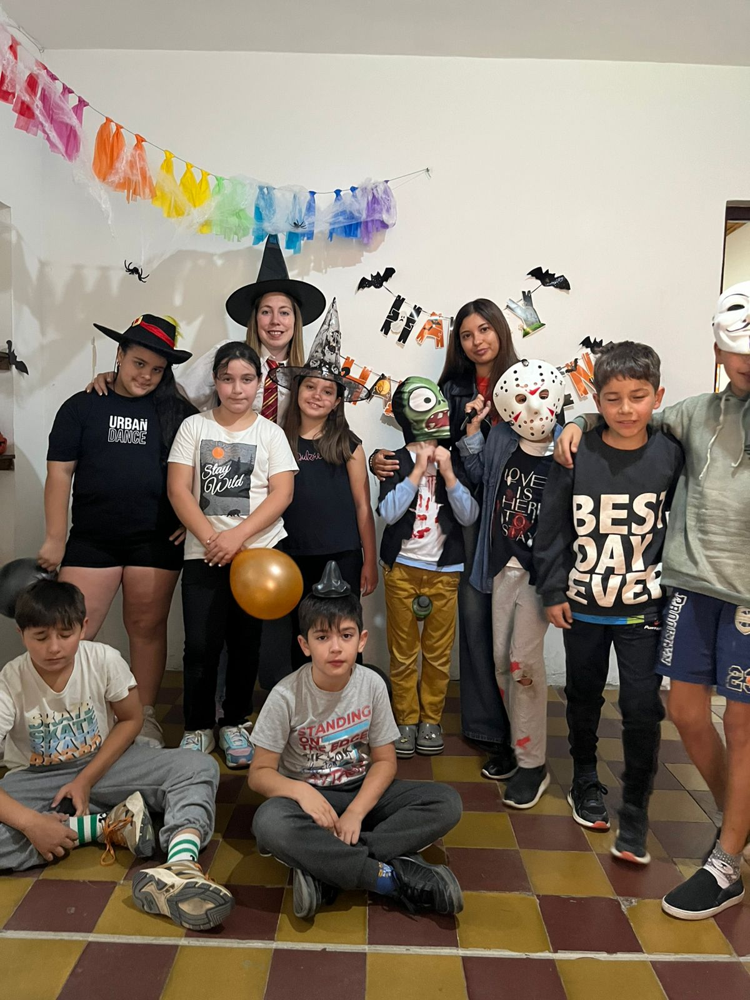
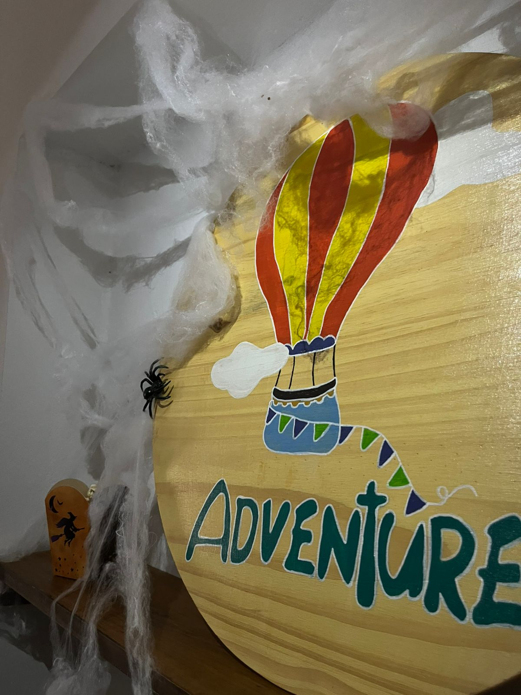
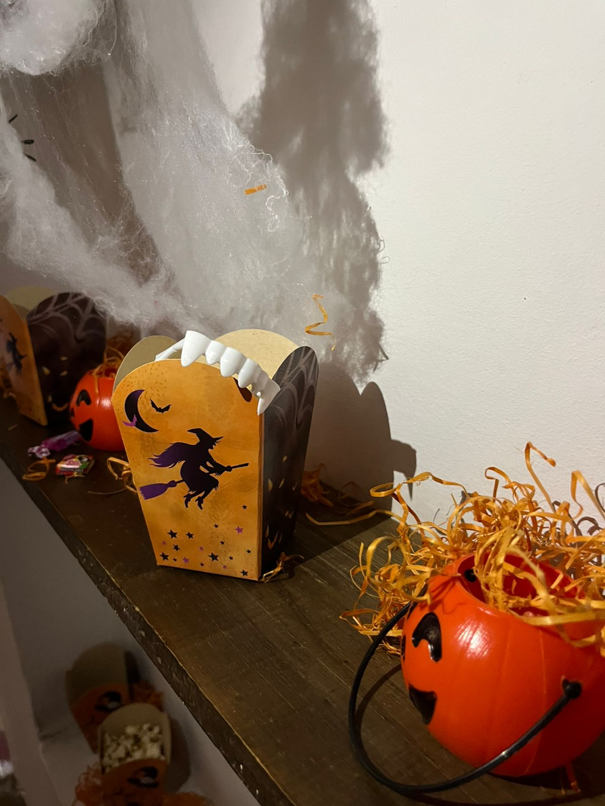
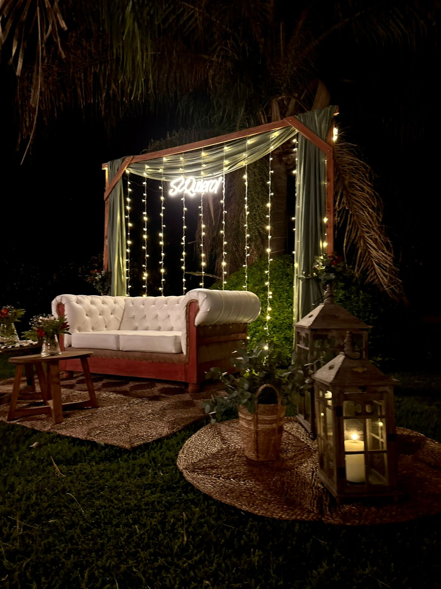
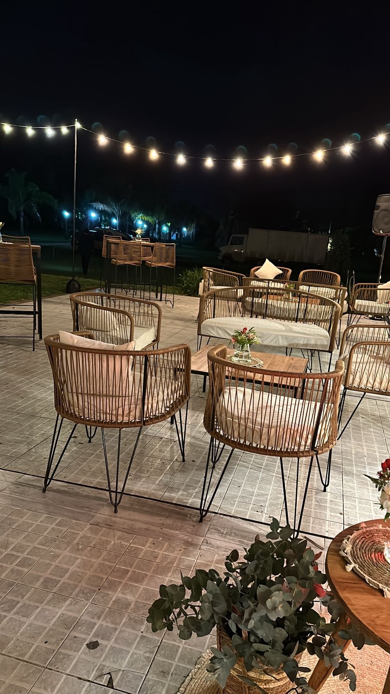
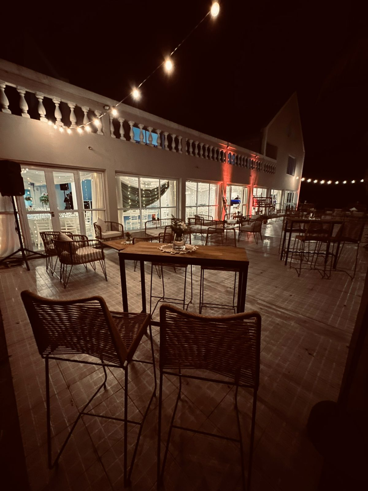
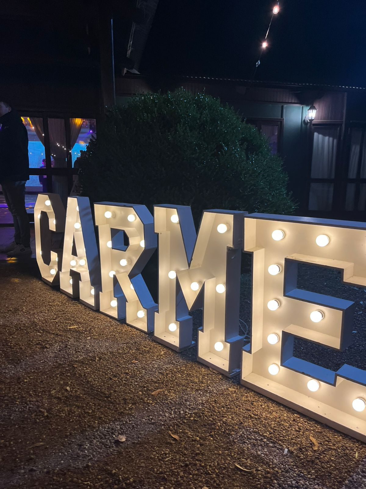
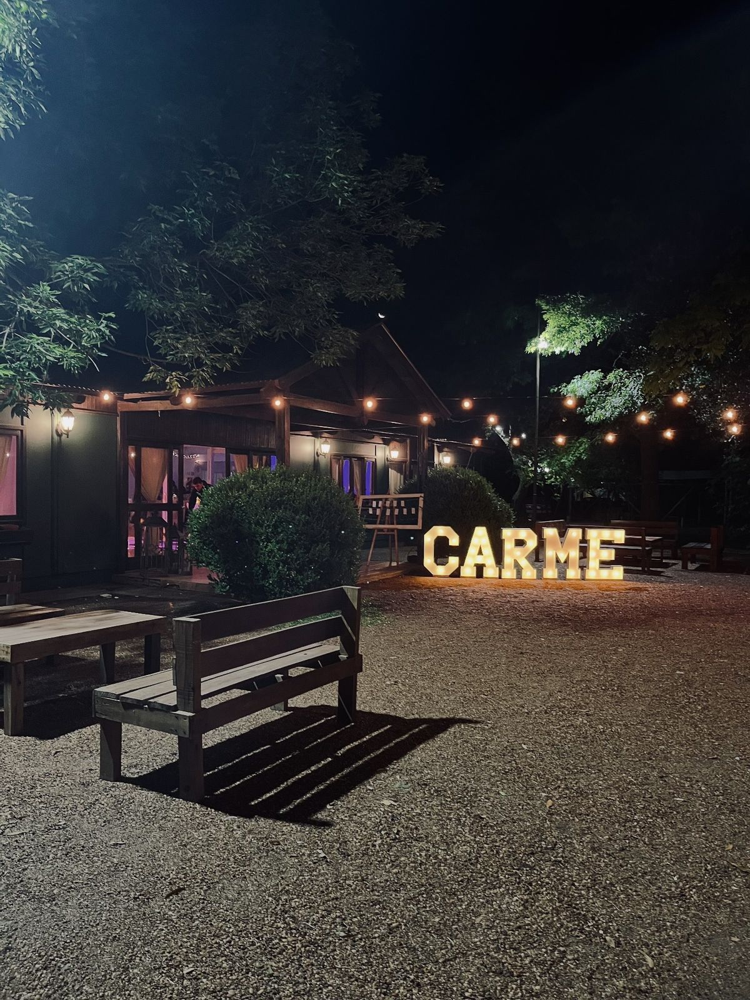
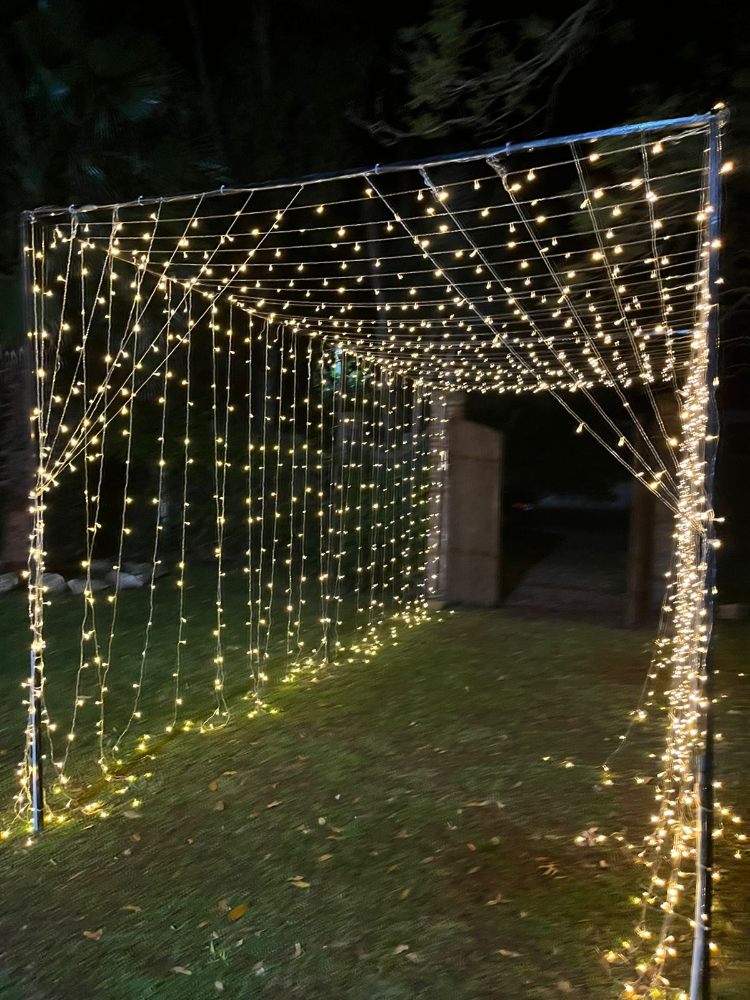

>>>> Mi lado profesional <<<<
Amo lo que hago, y cada día busco aprender más para crecer tanto profesional como personalmente.



Momentos especiales haciendo lo que mas me gusta, plasmar cada una de las expeciencias, desde días cotidianos hasta celebraciones como Halloween.



En cada uno de los eventos a los que voy nacen muchas ideas y proyectos. Es donde la creatividad se encuentra con la dedicación.



En muchos de los eventos a los que fui no solo participé como fotógrafa y creadora de contenido, sino que también aproveché cada experiencia para aprender algo nuevo, colaborando en distintos roles dentro del servicio.